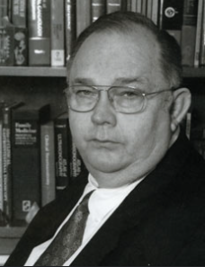
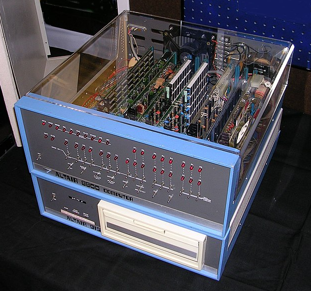

Ed Roberts
Americano, nascido em Miami – Flórida, Ed Roberts como era conhecido viveu de 13 de setembro de 1941 a 1º de abril de 2010. Engenheiro elétrico, empresário, agricultor e posteriormente médico. Casado por 3 vezes e pai de 6 filhos.
Inventor do primeiro computador pessoal bem-sucedido comercialmente (Altair 8800) em 1974 e conhecido por isso como “pai do computador pessoal”.
Também fundador do MITS (Micro Instrumentation and Telemetry Systems) em 1970, com foco venda de kits eletrônicos, sendo seu primeiro produto bem-sucedido a calculadora.
Ganhador em 1998 do Prêmio Stibitz-Wilson do Museu Americano de Computação e Robótica.

Essa é a maquina que mudou a vida de Ed Roberts
O Altair 8800 era baseado em um processador Intel 8080, com clock de 2MHz e 256 BYTES de memória. Isso mesmo, crianças, BYTES. Ele não tinha teclado, não tinha porta de joystick, não tinha saída de vídeo, porta de disquete, porta paralela, nada. O barramento era de 16 bits então o 8080 podia endereçar até incríveis 64KB de memória, mas isso custaria uma fortuna.
Toda a comunicação do Altair 8800 era feita através do painel frontal, aonde você programava o bicho usando linguagem de máquina, bit a bit.
